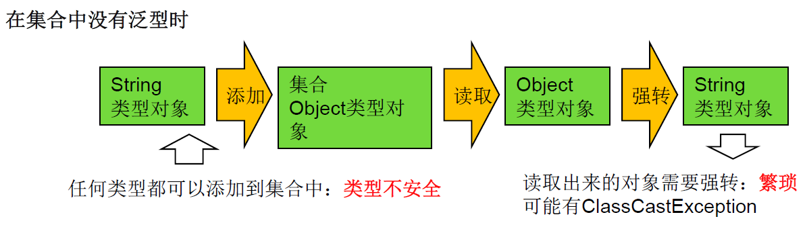
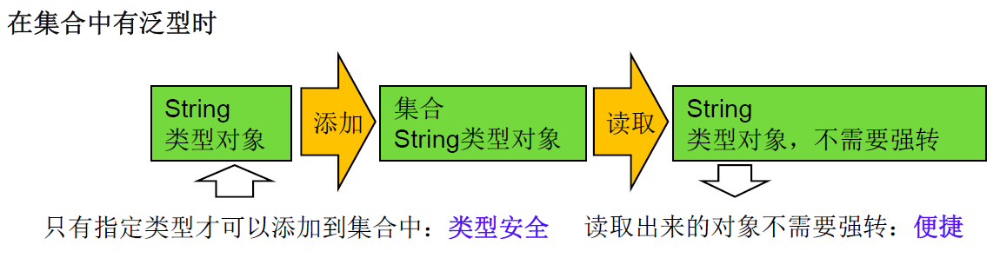

Java 之泛型¶
一、泛型简介¶
1. 泛型的概念¶
- 所谓泛型，就是允许在定义类、接口时通过一个标识表示类中某个属性的类型或者是某个方法的返 回值及参数类型。这个类型参数将在使用时（例如，继承或实现这个接口，用这个类型声明变量、 创建对象时确定（即传入实际的类型参数，也称为类型实参）。
- 从 JDK 5.0 以后，Java 引入了 “参数化类型(Parameterized type)” 的概念，允许我们在创建集合时再指定集合元素的类型，正如: List
，这表明该 List 只能保存字符串类型的对象。 - JDK 5.0 改写了集合框架中的全部接口和类，为这些接口、类增加了泛型支持，从而可以在声明集合变量、创建集合对象时传入类型实参。
2. 泛型的引入背景¶
集合容器类在设计阶段 / 声明阶段不能确定这个容器到底实际存的是什么类型的对象，所以在 JDK1.5 之前只能把元素类型设计为 Object，JDK1.5 之后使用泛型来解决。因为这个时候除了元素的类型不确定，其他的部分是确定的，例如关于这个元素如何保存，如何管理等是确定的，因此此时把元素的类型设计成一个参数，这个类型参数叫做泛型。Collection
3. 引入泛型的目的¶
- 解决元素存储的安全性问题，好比商品、药品标签，不会弄错。
- 解决获取数据元素时，需要类型强制转换的问题，好比不用每回拿商品、药品都要辨别。
Java 泛型可以保证如果程序在编译时没有发岀警告，运行时就不会产生 ClassCastException 异常。同时，代码更加简洁、健壮。
二、泛型在集合中的应用¶
1. 在集合中没有使用泛型的例子¶
@Test
public void test1(){
ArrayList list = new ArrayList();
//需求：存放学生的成绩
list.add(78);
list.add(76);
list.add(89);
list.add(88);
//问题一：类型不安全
// list.add("Tom");
for(Object score : list){
//问题二：强转时，可能出现ClassCastException
int stuScore = (Integer) score;
System.out.println(stuScore);
}
}
图示：

2. 在集合中使用泛型的例子 1¶
//在集合中使用泛型，以ArrayList为例
@Test
public void test1(){
ArrayList<String> list = new ArrayList<>();
list.add("AAA");
list.add("BBB");
list.add("FFF");
list.add("EEE");
list.add("CCC");
//遍历方式一：
Iterator<String> iterator = list.iterator();
while (iterator.hasNext()){
System.out.println(iterator.next());
}
System.out.println("-------------");
//便利方式二：
for (String str:
list) {
System.out.println(str);
}
}
图示：

3. 在集合中使用泛型例子 2¶
@Test
//在集合中使用泛型的情况：以HashMap为例
public void test2(){
Map<String,Integer> map = new HashMap<>();//jdk7新特性：类型推断
map.put("Tom",26);
map.put("Jarry",30);
map.put("Bruce",28);
map.put("Davie",60);
//嵌套循环
Set<Map.Entry<String, Integer>> entries = map.entrySet();
Iterator<Map.Entry<String, Integer>> iterator = entries.iterator();
while (iterator.hasNext()){
Map.Entry<String, Integer> entry = iterator.next();
String key = entry.getKey();
Integer value = entry.getValue();
System.out.println(key+"="+value);
}
}
4. 集合中使用泛型总结：¶
① 集合接口或集合类在 JDK 5.0 时都修改为带泛型的结构。
② 在实例化集合类时，可以指明具体的泛型类型
③ 指明完以后，在集合类或接口中凡是定义类或接口时，内部结构（比如：方法、构造器、属性等）使用到类的泛型的位置，都指定为实例化的泛型类型。
比如：add(E e) ---> 实例化以后：add(Integer e)
④ 注意点：泛型的类型必须是类，不能是基本数据类型。需要用到基本数据类型的位置，拿包装类替换
⑤ 如果实例化时，没有指明泛型的类型。默认类型为 java.lang.Object 类型。
三、自定义泛型结构¶
泛型类、泛型接口、泛型方法
1. 泛型的声明¶
- interface List
和 class GenTest - 常用 T 表示，是 Type 的缩写。
2. 泛型的实例化：¶
一定要在类名后面指定类型参数的值（类型）。如：
List
Iterator
- T 只能是类，不能用基本数据类型填充。但可以使用包装类填充
- 把一个集合中的内容限制为一个特定的数据类型，这就是 generics 背后的核心思想
//JDK 5.0以前
Comparable c = new Date();
System.out.println(c.comparaTo("red");
//JDK 5.0以后
Comparable <Date> c = new Date();
System.out.println(c.comparaTo("red");
总结：使用泛型的主要优点在于能够在编译时而不是在运行时检测错误
3. 注意点¶
-
泛型类可能有多个参数，此时应将多个参数一起放在尖括号内。比如
-
泛型类的构造器如下： public GenericClass(){}
而下面是错误的： public GenericClass
-
实例化后，操作原来泛型位置的结构必须与指定的泛型类型一致。
-
泛型不同的引用不能相互赋值。
尽管在编译时 ArrayList
- 泛型如果不指定，将被擦除，泛型对应的类型均按照 Object 处理，但不等价于 Object。
建议：泛型要使用一路都用。要不用，一路都不要用。
-
如果泛型结构是一个接口或抽象类，则不可创建泛型类的对象。
-
JDK 7.0，泛型的简化操作： ArrayList
first= new ArrayList<>();（类型推断） -
泛型的指定中不能使用基本数据类型，可以使用包装类替换。
-
在类 / 接口上声明的泛型，在本类或本接口中即代表某种类型，可以作为非静态属性的类型、非静态方法的参数类型、非静态方法的返回值类型。但在静态方法中不能使用类的泛型。
-
异常类不能是泛型的。
-
不能使用 new E[]。但是可以：E[] elements= (E[])new Object[capacity];
参考：ArrayList 源码中声明：Object[] elementData，而非泛型参数类型数组。
-
父类有泛型，子类可以选择保留泛型也可以选择指定泛型类型：
- 子类不保留父类的泛型：按需实现
- 没有类型 --- 擦除
- 具体类型
- 子类保留父类的泛型：泛型子类
- 全部保留
- 部分保留
- 结论：子类必须是 “富二代”，子类除了指定或保留父类的泛型，还可以增加自己的泛型
代码示例：
class Father<T1, T2> {
}
/**
* 定义泛型子类Son
* 情况一：继承泛型父类后不保留父类的泛型
*/
//1.没有指明类型 擦除
class Son1<A, B> extends Father {//等价于class Son1 extends Father<Object,Odject>{}
}
//2.指定具体类型
class Son2<A, B> extends Father<Integer, String> {
}
/**
* 定义泛型子类Son
* 情况二：继承泛型父类后保留泛型类型
*/
//1.全部保留
class Son3<T1, T2, A, B> extends Father<T1, T2> {
}
//2.部分保留
class Son4<T2, A, B> extends Father<Integer,T2>{
}
4. 自定义泛型结构¶
4.1 自定义泛型类¶
代码示例：
/**
* 自定义泛型类Order
*/
class Order<T> {
private String orderName;
private int orderId;
//使用T类型定义变量
private T orderT;
public Order() {
}
//使用T类型定义构造器
public Order(String orderName, int orderId, T orderT) {
this.orderName = orderName;
this.orderId = orderId;
this.orderT = orderT;
}
//这个不是泛型方法
public T getOrderT() {
return orderT;
}
//这个不是泛型方法
public void setOrderT(T orderT) {
this.orderT = orderT;
}
//这个不是泛型方法
@Override
public String toString() {
return "Order{" +
"orderName='" + orderName + '\'' +
", orderId=" + orderId +
", orderT=" + orderT +
'}';
}
// //静态方法中不能使用类的泛型。
// public static void show(T orderT){
// System.out.println(orderT);
// }
// //try-catch中不能是泛型的。
// public void show(){
// try {
//
// }catch (T t){
//
// }
// }
//泛型方法：在方法中出现了泛型的结构，泛型参数与类的泛型参数没有任何关系。
//换句话说，泛型方法所属的类是不是泛型类都没有关系。
//泛型方法，可以声明为静态的。
// 原因：泛型参数是在调用方法时确定的。并非在实例化类时确定。
public static <E> List<E> copyFromArryToList(E[] arr) {
ArrayList<E> list = new ArrayList<>();
for (E e :
list) {
list.add(e);
}
return list;
}
}
自定义泛型类 Order 的使用
@Test
public void test1() {
//如果定义了泛型类，实例化没有指明类的泛型，则认为此泛型类型为Object类型
//要求：如果大家定义了类是带泛型的，建议在实例化时要指明类的泛型。
Order order = new Order();
order.setOrderT(123);
System.out.println(order.getOrderT());
order.setOrderT("abc");
System.out.println(order.getOrderT());
//建议：实例化时指明类的泛型
Order<String> order1 = new Order<>("Tom", 16, "male");
order1.setOrderT("AA:BBB");
System.out.println(order1.getOrderT());
}
@Test
//调用泛型方法
public void test2(){
Order<String> order = new Order<>();
Integer [] arr = new Integer[]{1,2,3,4,5,6};
List<Integer> list = order.copyFromArryToList(arr);
System.out.println(list);
}
4.2 自定义泛型接口¶
代码示例：
/**
* 自定义泛型接口
*/
public interface DemoInterface <T> {
void show();
int size();
}
//实现泛型接口
public class Demo implements DemoInterface {
@Override
public void show() {
System.out.println("hello");
}
@Override
public int size() {
return 0;
}
}
@Test
//测试泛型接口
public void test3(){
Demo demo = new Demo();
demo.show();
}
4.3 自定义泛型方法¶
- 方法，也可以被泛型化，不管此时定义在其中的类是不是泛型类。在泛型方法中可以定义泛型参数，此时，参数的类型就是传入数据的类型。
- 泛型方法的格式： [访问权限]<泛型>返回类型 方法名 (泛型标识 参数名称]) 抛出的异常
- 泛型方法声明泛型时也可以指定上限
代码示例：
//泛型方法：在方法中出现了泛型的结构，泛型参数与类的泛型参数没有任何关系。
//换句话说，泛型方法所属的类是不是泛型类都没有关系。
//泛型方法，可以声明为静态的。
// 原因：泛型参数是在调用方法时确定的。并非在实例化类时确定。
public static <E> List<E> copyFromArryToList(E[] arr) {
ArrayList<E> list = new ArrayList<>();
for (E e :
list) {
list.add(e);
}
return list;
}
4.4 总结：¶
- 泛型实际上就是标签，声明时不知道类型，再使用时指明
- 定义泛型结构，即：泛型类、接口、方法、构造器时贴上泛型的标签
- 用泛型定义类或借口是
放到类名或接口名后面，定义泛型方法时在方法名前加上 < T>
5. 泛型的应用场景¶
【DAO.java】: 定义了操作数据库中的表的通用操作。 ORM 思想 (数据库中的表和 Java 中的类对应)
public class DAO<T> {//表的共性操作的DAO
//添加一条记录
public void add(T t){
}
//删除一条记录
public boolean remove(int index){
return false;
}
//修改一条记录
public void update(int index,T t){
}
//查询一条记录
public T getIndex(int index){
return null;
}
//查询多条记录
public List<T> getForList(int index){
return null;
}
//泛型方法
//举例：获取表中一共有多少条记录？获取最大的员工入职时间？
public <E> E getValue(){
return null;
}
}
【CustomerDAO.java】:
【StudentDAO.java】:
四、泛型在继承上的体现¶
泛型在继承方面的体现：
虽然类 A 是类 B 的父类，但是 G 和 G 二者不具备子父类关系，二者是并列关系。
补充：类 A 是类 B 的父类，A
代码示例：
@Test
public void test1(){
Object obj = null;
String str = null;
obj = str;
Object[] arr1 = null;
String[] arr2 = null;
arr1 = arr2;
//编译不通过
// Date date = new Date();
// str = date;
List<Object> list1 = null;
List<String> list2 = new ArrayList<String>();
//此时的list1和list2的类型不具子父类关系
//编译不通过
// list1 = list2;
/*
反证法：
假设list1 = list2;
list1.add(123);导致混入非String的数据。出错。
*/
show(list1);
show1(list2);
}
public void show1(List<String> list){
}
public void show(List<Object> list){
}
@Test
public void test2(){
AbstractList<String> list1 = null;
List<String> list2 = null;
ArrayList<String> list3 = null;
list1 = list3;
list2 = list3;
List<String> list4 = new ArrayList<>();
}
五、通配符¶
1. 通配符的使用¶
- 使用类型通配符：?
比如：List<?>，Map<?,?>
List<?> 是 List
-
读取 List<?> 的对象 list 中的元素时，永远是安全的，因为不管 list 的真实类型是什么，它包含的都是 Object
-
写入 list 中的元素时，不可以。因为我们不知道 c 的元素类型，我们不能向其中添加对象。 除了添加 null 之外。
说明：
- 将任意元素加入到其中不是类型安全的
Collection<?> c = new ArrayList
c.add(new Object());// 编译时错误
因为我们不知道 c 的元素类型，我们不能向其中添加对象。add 方法有类型参数 E 作为集合的元素类型。我们传给 add 的任何参数都必须是一个已知类型的子类。因为我们不知道那是什么类型，所以我们无法传任何东西进去。
-
唯一的例外的是 null，它是所有类型的成员。
-
我们可以调用 get() 方法并使用其返回值。返回值是一个未知的类型，但是我们知道，它总是一个 Object。
代码示例:
@Test
public void test3(){
List<Object> list1 = null;
List<String> list2 = null;
List<?> list = null;
list = list1;
list = list2;
//编译通过
// print(list1);
// print(list2);
//
List<String> list3 = new ArrayList<>();
list3.add("AA");
list3.add("BB");
list3.add("CC");
list = list3;
//添加(写入)：对于List<?>就不能向其内部添加数据。
//除了添加null之外。
// list.add("DD");
// list.add('?');
list.add(null);
//获取(读取)：允许读取数据，读取的数据类型为Object。
Object o = list.get(0);
System.out.println(o);
}
public void print(List<?> list){
Iterator<?> iterator = list.iterator();
while(iterator.hasNext()){
Object obj = iterator.next();
System.out.println(obj);
}
}
2. 注意点¶
//注意点1：编译错误：不能用在泛型方法声明上，返回值类型前面<>不能使用?
public static <?> void test(ArrayList<?> list){
}
//注意点2：编译错误：不能用在泛型类的声明上
class GenericTypeClass<?>{
}
//注意点3：编译错误：不能用在创建对象上，右边属于创建集合对象
ArrayList<> list2 new ArrayList<?>();
3. 有限制的通配符¶
-
<?>：允许所有泛型的引用调用
-
通配符指定上限
上限 extends：使用时指定的类型必须是继承某个类，或者实现某个接口，即 <=
- 通配符指定下限
下限 super：使用时指定的类型不能小于操作的类，即 >=
-
举例：
-
<?extends Number>（无穷小， Number]
只允许泛型为 Number 及 Number 子类的引用调用
-
<?super Number>[Number，无穷大）
只允许泛型为 Number 及 Number 父类的引用调用
-
<? extends Comparable>
只允许泛型为实现 Comparable 接口的实现类的引用调用
代码示例：
@Test
public void test4(){
List<? extends Person> list1 = null;
List<? super Person> list2 = null;
List<Student> list3 = new ArrayList<Student>();
List<Person> list4 = new ArrayList<Person>();
List<Object> list5 = new ArrayList<Object>();
list1 = list3;
list1 = list4;
// list1 = list5;
// list2 = list3;
list2 = list4;
list2 = list5;
//读取数据：
list1 = list3;
Person p = list1.get(0);
//编译不通过
//Student s = list1.get(0);
list2 = list4;
Object obj = list2.get(0);
////编译不通过
// Person obj = list2.get(0);
//写入数据：
//编译不通过
// list1.add(new Student());
//编译通过
list2.add(new Person());
list2.add(new Student());
}
全文完